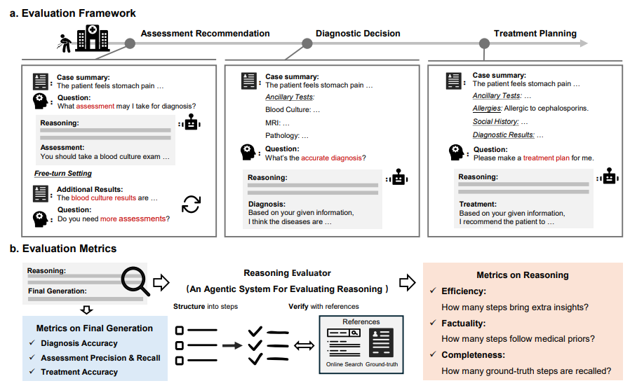

|
Hi! I'm Chaoyi, an Assistant Professor at the School of Artificial Intelligence, Shanghai Jiao Tong University , specializing in AI for Medicine. My current research focuses on advancing medical foundation models in both language and multimodal domains, and on designing agentic systems that push the boundaries of AI4Medicine. I'm looking for enthusiastic Master's and PhD students to join our team! If you're passionate about medical AI and motivated to explore new frontiers, I'd love to hear from you and work together to shape the future. Email / Scholar / Github
|
{kind=link}
|
|

|
Qiaoyu Zheng, Yuze Sun, Chaoyi Wu, Weike Zhao, Pengcheng Qiu, Yongguo Yu, Kun Sun, Yanfeng Wang, Ya Zhang, Weidi Xie Technical Report, 2025 In this paper, we propose an end-to-end reinforcement learning framework for training agentic RAG systems, evolving their action policies through large-scale data fitting to achieve enhanced traceable diagnostic reasoning capabilities.
|

|
Weike Zhao*, Chaoyi Wu*, Yanjie Fan*, Xiaoman Zhang, Pengcheng Qiu, Yuze Sun, Xiao Zhou, Yanfeng Wang, Ya Zhang, Yongguo Yu, Kun Sun, Weidi Xie, Technical Report, 2025. We develop DeepRare, the first agentic AI system for rare disease diagnosis that integrates specialized tools and medical knowledge sources to provide traceable diagnostic reasoning with exceptional accuracy across multiple evaluation datasets.

|
|
Pengcheng Qiu*, Chaoyi Wu*, Pengcheng Qiu, Shuyu Liu, Weike Zhao, Ya Zhang, Yanfeng Wang, Weidi Xie Technical Report, 2025 In this study, we quantitatively evaluate the free-text reasoning abilities of various state-of-the-art LLMs, such as DeepSeek-R1 and OpenAI-o3-mini, in assessment recommendation, diagnostic decision, and treatment planning. |
|
2025
Technical Report, 2025
In this study, we quantitatively evaluate the free-text reasoning abilities of various state-of-the-art LLMs, such as DeepSeek-R1 and OpenAI-o3-mini, in assessment recommendation, diagnostic decision, and treatment planning.
MICCAI2025-Workshop, Oral
In this study, we develop an automated machine learning agentic AI system for medical imaging analysis, aiming to equip medical agent systems with self-evolution capabilities.
MICCAI2025, Early Accepted
In this study, we propose a novel medical image similarity ordering pipeline that operates at multiple granularities by effectively utilizing rich information extracted from dense radiology report annotations.
2024
Technical Report, 2024
In this study, we systematically investigate a pre-requisite question for building concrete radiology agents which is, 'Can modern LLMs act as agent cores in radiology environments?' Serving for this goal, we build up RadABench, a comprehensive LLM-based agent evaluation benchmark for radiology.
npj Digital Medicine, 2025
In this study, we present MedS-Bench, a comprehensive benchmark designed to evaluate the performance of large language models (LLMs) in clinical contexts beyond multiple-choice question-answering. Moreover, we build up a new comprehensive medical instruction dataset, termed as MedS-Ins.
Computerized Medical Imaging and Graphics (CMIG), 2024
In this paper, we propose a grounded report generation system for brain MRI leveraging the cooperation of different sub-tools. In real clinical scenarios, the system can significantly improve the efficiency of the radiologists.
EMNLP2024, Main
In this paper, we propose an entity-level assessment metric for radiological reports beyond chest x-ray using NER and synonym normalization models. Unlike LLM-based assessment pipelines, our metric is more lightweight and objective targeting large-scale auto-evaluation.
Technical Report, 2024
In this paper, we introduce RadGenome-Chest CT, a comprehensive, large-scale, region-guided 3D chest CT interpretation dataset based on CT-RATE. It includes: Organ-level segmentation for 197 categories; 665K multi-granularity grounded reports; 1.3M grounded VQA pairs.
ECCV2024 Oral
In this paper, we consider the problem of visual representation learning for computational pathology, by exploiting large-scale image-text pairs gathered from public resources, along with the domain specific knowledge in pathology.
Nature Communications, 2024
In this paper, we aim to develop a multilingual language corpus (MMedC), benchmark (MMedBench) and an open-source, multilingual language model (MMedLM) for medicine, that benefits a wider, linguistically diverse audience from different regions.
npj Digital Medicine, 2025
In this paper, we build up a universal medical segmentation model, driven by text prompts (SAT).
Nature Communications, 2024
In this paper, we collect a large-scale multi-modal, multi-scan, long-tailed multi-label diagnosis (classification) dataset. We further propose a vision encoder together with a fusion module, enabling arbitrary scan input per case. On evaluation, our methods achieve better experiment results on our benchmark and can also serve as a pre-train model for external datasets.
2023
Technical Report, 2023
We evaluate the GPT-4V on 92 radiographic cases, 20 pathology cases and 16 location cases across 17 medical systems covering 8 imaging modalities. In general, as the cases shown, GPT-4V is still far from clinical usage.
Computerized Medical Imaging and Graphics (CMIG), 2025
We release a new knowledge-enhanced Brain MRI pre-train foundation model leveraging image-report pairs which can realize zero-shot diagnosis of unseen brain diseases.
Nature Communications
In this study, we aim to initiate the development of Radiology Foundation Model, termed as RadFM. We construct a large-scale Medical Multi-modal Dataset, MedMD, consisting of 16M 2D and 3D medical scans.
Nature Communications Medicine, 2024
In this paper, we focus on the problem of Medical Visual Question Answering (MedVQA). We propose a generative medical VQA model, MedVInT, together with a large scale MedVQA Dataset, PMC-VQA.
Journal of the American Medical Informatics Association (JAMIA)
In this report, we introduce PMC-LLaMA, an open-source language model that is acquired leveraging large medical corpus, surpassing chatGPT on medicalQA benchmarks.
International Conference on Medical Image Computing and Computer Assisted Intervention (MICCAI), 2023
We collect a biomedical dataset, PMC-OA with 1.6M image-caption pairs collected from PubMedCentral's OpenAccess subset.
Nature Communications, 2023
Here, we propose a knowledge-enhanced vision-language pre-training approach for auto-diagnosis on chest X-ray images. First trains a knowledge encoder based on an existing medical knowledge graph, then leverages the pre-trained knowledge encoder to guide the visual representation learning.
MICCAI2023-Workshop, Oral
In this paper, we consider the problem of disease diagnosis. Unlike the conventional learning paradigm that treats labels independently, we propose a knowledge-enhanced framework, that enables training visual representation with the guidance of medical domain knowledge.
International Conference on Computer Vision (ICCV), 2023
We propose to leverage medical specific knowledge enhancing language-image pre-training method, significantly advancing the ability of pre-trained models to handle unseen diseases on zero-shot classification and grounding tasks.
2022
International Conference on Medical Image Computing and Computer Assisted Intervention (MICCAI), 2022
We propose Boundary-Enhanced Self-Supervised Learning (BE-SSL), leveraging supervoxel segmentation and registration as two related proxy tasks, enhancing brain structure segmentation.
Computerized Medical Imaging and Graphics (CMIG), 2022, 101: 102108
We first leverage the information of LN stations for metastatic LN detection. Metastatic LN station classification is proposed as proxy task for metastatic LN detection. A GCN-based structure is adopted to model the mutual influence among LN stations.
|
|
Based on a template by Jon Barron.
|